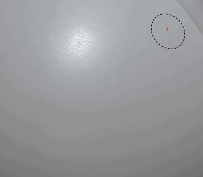

Dynamic Strokes are regular brush strokes powered by Substance files that can change for each stamp inside a brush stroke.
Each individual element alongside a brush stroke can be modified based on specific behavior designed in the Substance file itself.
For further details, see the following pages :